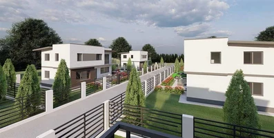
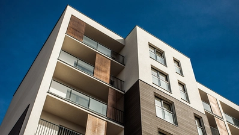
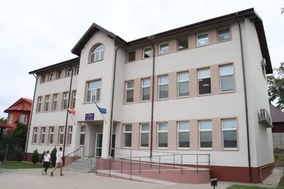
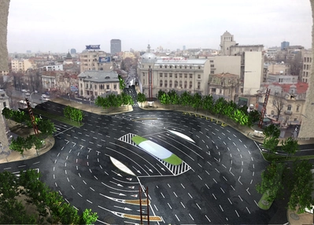
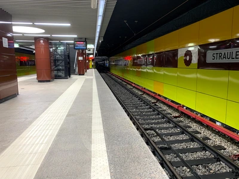
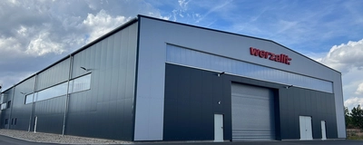
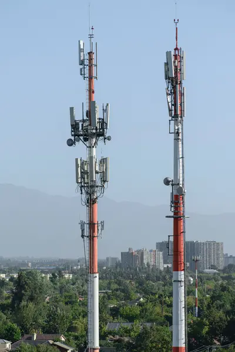

Bine ați venit la {{ companyData.CompanyName }}!
Suntem mai mult decât o companie de proiectare in construcții; suntem un amestec inovator între expertiza în proiectarea constructiilor și tehnologiile avansate din domeniul IT și automatizare. Fondată în {{ companyData.FoundingYear }}, compania noastră s-a dezvoltat rapid, stabilindu-se ca un lider în proiectarea construcțiilor din {{ companyData.AddressLocality }}.
Misiunea noastră este clară și puternică: transformăm visele arhitecturale în realitate, creând structuri care inspiră și îmbogățesc comunitățile în care ne desfășurăm activitatea. Ne mândrim cu capacitatea de a combina expertiza tehnică în construcții cu tehnologii de ultimă oră în IT și automatizare, oferind astfel soluții rapide, eficiente și de înaltă calitate pentru proiectele noastre.
Echipa noastră este dedicată excelenței, inovației și durabilității. Fie că lucrăm la proiecte rezidențiale intime sau la construcții industriale sau de telecom, abordarea noastră personalizată și atenția meticuloasă la detalii ne disting în peisajul în continuă schimbare al industriei construcțiilor. Suntem {{ companyData.CompanyName }}, și suntem aici pentru a construi viitorul.
Istoria Noastră
{{ companyData.CompanyName }} a fost fondată în {{ companyData.FoundingYear }} de către {{ companyData.CompanyOwner }}, un vizionar pasionat de construcții și inovație. Cu un spirit antreprenorial puternic și o dorință arzătoare de a schimba modul în care se fac construcțiile, compania noastră a început ca un mic birou de proiectare în inima {{ companyData.AddressLocality }}-ului.
Încă de la început, am pus un accent puternic pe integrarea tehnologiilor avansate în procesele noastre de lucru. Acest lucru ne-a permis să oferim soluții de proiectare mai rapide, mai eficiente și mai inovatoare, câștigând rapid recunoașterea și respectul în industrie. Am crescut alături de tehnologie, adoptând cele mai noi instrumente și metode pentru a ne îmbunătăți constant serviciile.
Pe măsură ce am câștigat experiență și expertiză, portofoliul nostru de proiecte s-a extins, acoperind o gamă largă de sectoare, de la construcții rezidențiale la proiecte industriale si de telecomunicatii. Echipa noastră s-a mărit, atrăgând profesioniști talentați și dedicați din diverse domenii, toți împărtășind aceeași viziune și valori.
Astăzi, {{ companyData.CompanyName }} este recunoscută ca un lider în domeniul proiectării în construcții, cu o reputație solidă pentru inovație, calitate și eficiență. Ne mândrim cu realizările noastre, dar rămânem umili și dedicați misiunii noastre de a contribui la construirea unui viitor mai bun.
Ne uităm înapoi la istoria noastră cu mândrie, dar ochii noștri sunt ferm ațintiți asupra viitorului, pregătiți să adoptăm noi provocări și să continuăm să inovăm în tot ceea ce facem.
Valorile Noastre
Excelență
Ne angajăm să oferim servicii de cea mai înaltă calitate, îmbunătățind constant standardele noastre pentru a depăși așteptările clienților și partenerilor noștri.
Inovație
Adoptăm cele mai recente tehnologii și metode pentru a ne asigura că rămânem în fruntea industriei, oferind soluții inovatoare care aduc valoare adăugată proiectelor noastre.
Sustenabilitate
Ne dedicăm creării unui impact pozitiv asupra comunităților și mediului înconjurător, integrând practici sustenabile în toate aspectele activității noastre.
Integritate
Conduita noastră etică și transparența în toate acțiunile noastre consolidează încrederea clienților, partenerilor și angajaților în {{ companyData.CompanyName }}.
Angajament față de Comunitate
Ne implicăm activ în comunitățile în care operăm, contribuind la dezvoltarea lor și susținând inițiativele locale care îmbunătățesc calitatea vieții.
Realizările Noastre
Deși {{ companyData.CompanyName }} a fost fondată în anul {{ companyData.FoundingYear }}, rădăcinile experienței noastre se întind mult mai adânc, începând din anul 2009. În tot acest timp, am acumulat o bogăție de cunoștințe și experiență, lucrând la o varietate impresionantă de proiecte.
Proiecte Rezidențiale
 De la case individuale până la ansambluri rezidențiale și blocuri de apartamente, am pus întotdeauna accent pe crearea de spații confortabile, sigure și estetice. Fiecare locuință este concepută cu grijă, ținând cont de nevoile specifice ale locatarilor și integrându-se armonios în contextul urban sau natural existent.
Proiecte Publice
  Am contribuit la dezvoltarea comunităților prin realizarea de școli, pasaje pietonale și rutiere, stații de metrou și alte infrastructuri esențiale. Aceste proiecte nu doar că îmbunătățesc calitatea vieții locuitorilor, dar demonstrează și angajamentul nostru față de siguranță, accesibilitate și design inovator.
Proiecte Industriale
Halele industriale și facilitățile de producție realizate de echipa noastră sunt proiectate pentru a fi eficiente, durabile și sigure. Înțelegem complexitatea și cerințele specifice ale acestor spații, și ne asigurăm că toate proiectele noastre industriale îndeplinesc cele mai înalte standarde de calitate și funcționalitate.
Proiecte de Telecomunicații

Am fost implicați în numeroase lucrări de telecomunicații, contribuind la dezvoltarea infrastructurii de comunicații din regiune. Acest lucru a necesitat o abordare atentă și soluții tehnice avansate, demonstrând încă o dată capacitatea noastră de a ne adapta și de a excela în diverse domenii ale construcțiilor.
Soluții Software Inovatoare
Nu ne-am limitat doar la construcții. Am dezvoltat soluții software inovatoare care ne-au permis să eficientizăm procesele, să reducem costurile și să livrăm proiecte de calitate superioară într-un timp mai scurt. Integrarea tehnologiilor IT în activitatea noastră este un testament al dorinței noastre de a ne îmbunătăți constant și de a rămâne la curent cu cele mai recente tendințe din industrie.
Răspunderea Noastră în Fața Comunității
La {{ companyData.CompanyName }}, ne asumăm responsabilitatea deplină pentru fiecare proiect pe care îl dezvoltăm, conștienți de rolul vital pe care îl jucăm în construirea infrastructurii comunității. Înțelegem că realizările noastre sunt destinate să dureze și să servească generații întregi.
Suntem angajați în a asigura că fiecare construcție pe care o realizăm este nu doar estetic plăcută și funcțională, ci și sigură și durabilă. Răspunderea noastră se extinde pe o perioadă de 50 până la 100 de ani, în funcție de categoria de importanță a imobilelor, reflectând angajamentul nostru față de calitate și integritate structurală.
Ne mândrim cu faptul că nu doar construim structuri, ci contribuim activ la dezvoltarea și consolidarea comunității. Fie că este vorba de școli, spitale, locuințe sau infrastructură publică, fiecare proiect este o declarație a dedicării noastre față de un viitor mai sigur și mai prosper pentru toți.
Viziunea Noastră
Viziunea noastră transcende limitele construcției tradiționale, având ca scop crearea unui viitor mai durabil, inovator și inclusiv. Aspirăm să fim pionieri în industrie, stabilind noi standarde de excelență, calitate și responsabilitate.
Ne dedicăm inovației continue și adoptării celor mai recente tehnologii în domeniul proiectării, construcției și software-ului, pentru a oferi soluții eficiente și personalizate care să răspundă nevoilor în schimbare ale societății.
Integrăm tehnologii de vârf din domeniul IT și automatizare, reușind să îmbinăm expertiza în construcții cu inovația software pentru a furniza proiecte de calitate, rapid și eficient. Aceasta ne permite să transformăm visele arhitecturale în realitate tangibilă, într-un mod care era de neimaginat în trecut.
Viziunea noastră include crearea de spații care să inspire, să energizeze și să îmbunătățească calitatea vieții pentru toți. Ne propunem să construim nu doar clădiri, ci și comunități puternice, sustenabile și interconectate.
Suntem dedicați protejării mediului înconjurător și promovăm practici ecologice în toate proiectele noastre, contribuind astfel la un viitor mai verde și mai curat.
Prin pasiune, angajament și inovație, viziunea noastră este să lăsăm o amprentă pozitivă asupra lumii, modelând peisajul urban pentru generațiile care vor veni.
Contact
Pentru mai multe informații sau întrebări, nu ezitați să ne contactați sau sa ne scrieți pe WhatsApp.